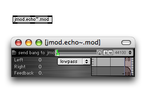
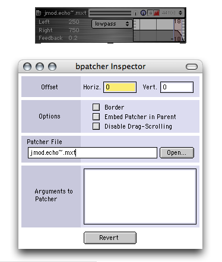
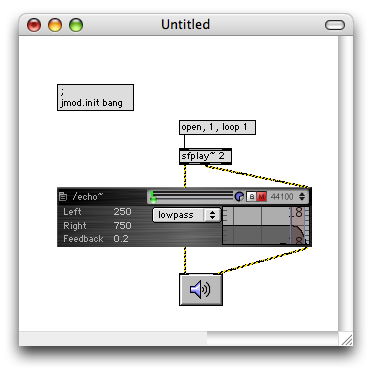
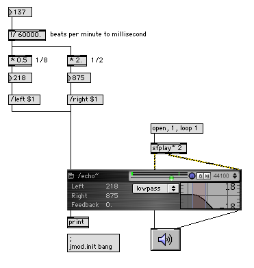
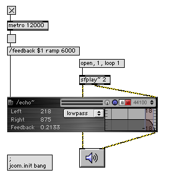
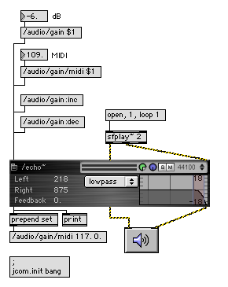

Jamoma consists of a number of modules for the processing of control, audio and video data. Each module behaves like an object in Max. Compared to ordinary Max objects Jamoma modules offer a higher level of functionality, with more complex behaviour, and a user interface for interaction. Jamoma modules are saved as abstractions. You can find more information on abstractions and the bpatcher object in Max tutorials 26-28 and 43. In this tutorial we will use one Jamoma module, and play around with it to see what functionalities are embeded in a module. Before starting, please make sure that Jamoma is properly installed in the Max search path as described in here.
We will be using a module named jmod.echo~.mxt. This is a simple stereo audio effect, offering stereo echos with filtering and feedback. This can either be loaded as an ordinary object or a bpatcher.
If you want to load it as an ordinary object, follow these steps:

If we instead want to embedd the interface in the patch, we can load it as a bpatcher:

Before we start playing around with the module, it is a good idea to name and initialize the module. Give the module a name by selecting it, choose Get Info from the menu, and type in a name as first argument, if using a bpatcher - or type directly the module name as first argument if using an object box. The object need an OpenSoundControl name, so it should start with a slash. Later on, as we add more modules, the name becomes important, as it is used to distinguish one module from another. /echo~ seems like a good name for our module.
Jamoma uses a special system for initialization, instead of relying on loadbang. We have to initialise the modules by sending a bang to jcom.init. Here are two ways of doing it, using either a message box or a ubutton and send:

If everything worked as supposed to, the module should look as above. Notice that the name we provided is now displayed in the upper left corner of the module.
Jamoma modules might have a varying number of inlets and outlets. The leftmost inlet and outlet is always used for control messages to and from the object. The remaining inlets and outlets are optional and used for signals. jmod.echo~.mxt is a stereo effect, and therefore has two signal inlets and two signal outlets. All in all it has three inlets and outlets.
Now we will add a few more objects to the patch so that we can start exploring the module:

This way we can open a stereo sound file, play and loop it, and listen to the resulting sound. Open a sound file, and turn on audio.
Initially, the echo effect is muted, and gain is turned all way down. At the top of the module there is a toolbar that is common to most audio modules. The M button mutes and unmutes the module. The egg slider is used for adjusting volume. You can monitor volume out of the module as well.
Once you have sound going, you can start playing with the parameters of the module. You can change delay time in milliseconds of the left and right channel delays, feedback, what kind of filter to use, and filter gain, frequency and resonance.
In the toolbar, there are a few more settings to explore. The B button can be used for bypassing the module. The dial to the left sets the mix between dry and wet signal. If it is all blue, you only get the wet signal. If it is all gray, you only get the dry signal. The effect of muting and bypassing might be easiest to hear by setting mix to all wet or all dry respectively.
You can change internal sampling rate in the echo effect by clicking the arrows at the right of the toolbar. You will have to restart audio for this to take effect. If you use an effect that takes a lot of CPU, and you know that it will not produce a lot of high frequency output, you can reduce the CPU load by downsampling the module.
Next we want to communicate messages to and from the module. We will start of by connecting the left outlet to a print object and watch the Max window as we change parameters. Whenever we change a parameter, an OpenSoundControl message is output with the new value. Here are some examples:
/left 250
/right 750
/feedback 0.33
/gain/midi 102.000000
/filtergain -1.780200
/cf 1773.715454
/q 0.662400
/filtergain 1.918100
/filtertype lowpass
We can send similar messages to the leftmost inlet of the module. This could be used for instance to adjust delays depending on the tempo:

Jamoma modules also have built in capability for parameters to ramp to new values over time. Suppose that we want to introduce delay feedback gradually. This can be done by adding additional arguments to the /feedback message, utilizing the ramp keyword followed by how long it should take to ramp from current to the new value:

Gain can be controlled in several ways in most Jamoma modules, depending on your need:
| /audio/gain | Set gain value in dB. |
| /audio/gain/midi | Set gain as MIDI value. |
| /audio/gain:inc | Increase MIDI value by one. |
| /audio/gain:dec | Decrease MIDI value by one. |
Here is a patch illustrating how this works. Note that regardless of how you change the gain, the new gain value is output from the left outlet as a MIDI value.
